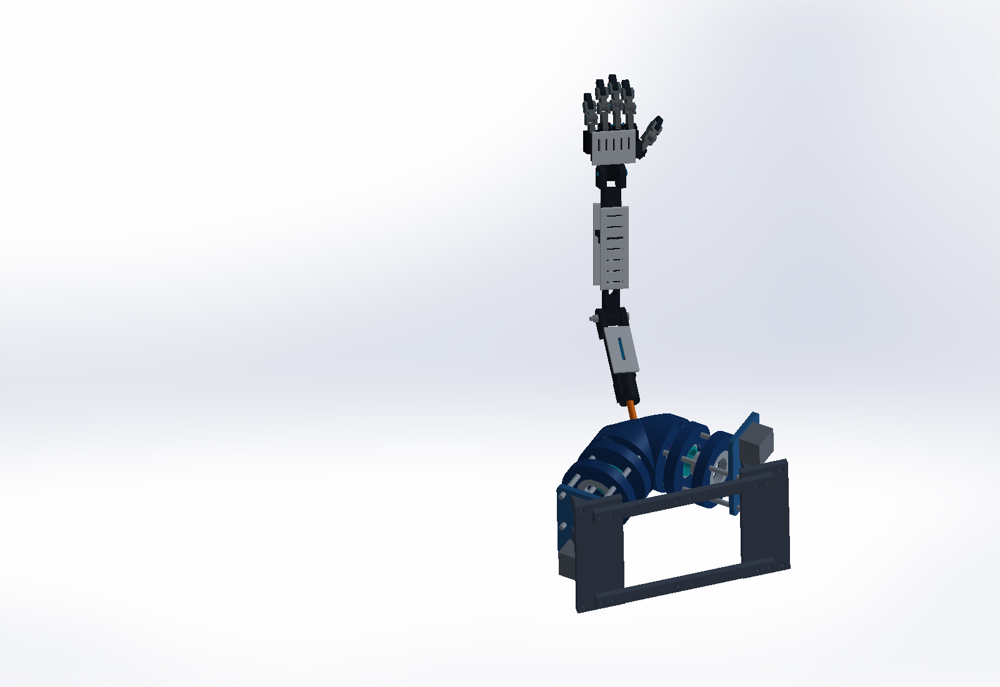

02 / ROBOTICS / MECHANISM DEVELOPMENT
From spherical gears to articulated motion.
An ABENICS-based shoulder concept extended into a mechanical arm, wrist, and five-finger hand, with a long-term goal of human-motion tracking.
- MY ROLE
- Concept proposal · early CAD development & mechanical integration
- WHEN
- 2026 — Present
- STATUS
- Movable CAD concept

The challenge
Explore a robotic arm that could eventually mimic human arm motion through computer vision and integrate with the team’s hand work. The immediate mechanical challenge is joint layout, packaging, and a coherent assembly.
My contribution
I proposed the human-motion-following arm concept and contribute to early CAD layout, component placement, and mechanical design decisions. The current design builds on an existing ABENICS spherical-gear mechanism; I do not claim authorship of the original gear system.
Design decisions
The assembly retains two provisional motor envelopes at the base and adds a forearm, vented panels, a hinged wrist, and five digits with three hinged sections each. The elbow, wrist, and fingers remain passive in this CAD concept.
Evidence & current outcome
Recorded CAD solver checks passed for the wrist and all fifteen digit hinges, along with the elbow with the hand attached. The motion preview uses nine assembled CAD poses. Saved-pose checks found no solid overlap between adjacent digit segments; they do not establish full-range collision clearance or grip performance.
What comes next
Develop the transmission and controls, specify actual motor interfaces and joint limits, and validate physical fits and strength. Computer-vision control is a proposed direction; powered operation and load capacity have not been demonstrated.
A closer look at the motion
Play the wrist-and-finger CAD preview. This illustrates passive joint motion; it is not powered hardware or a motor simulation.

ABENICS is the reference shoulder mechanism. The arm concept builds on imported spherical-gear geometry; structural and hand development extends that base.
Original mechanism research ↗More work. More ways to solve a problem.
Explore all projects ↗